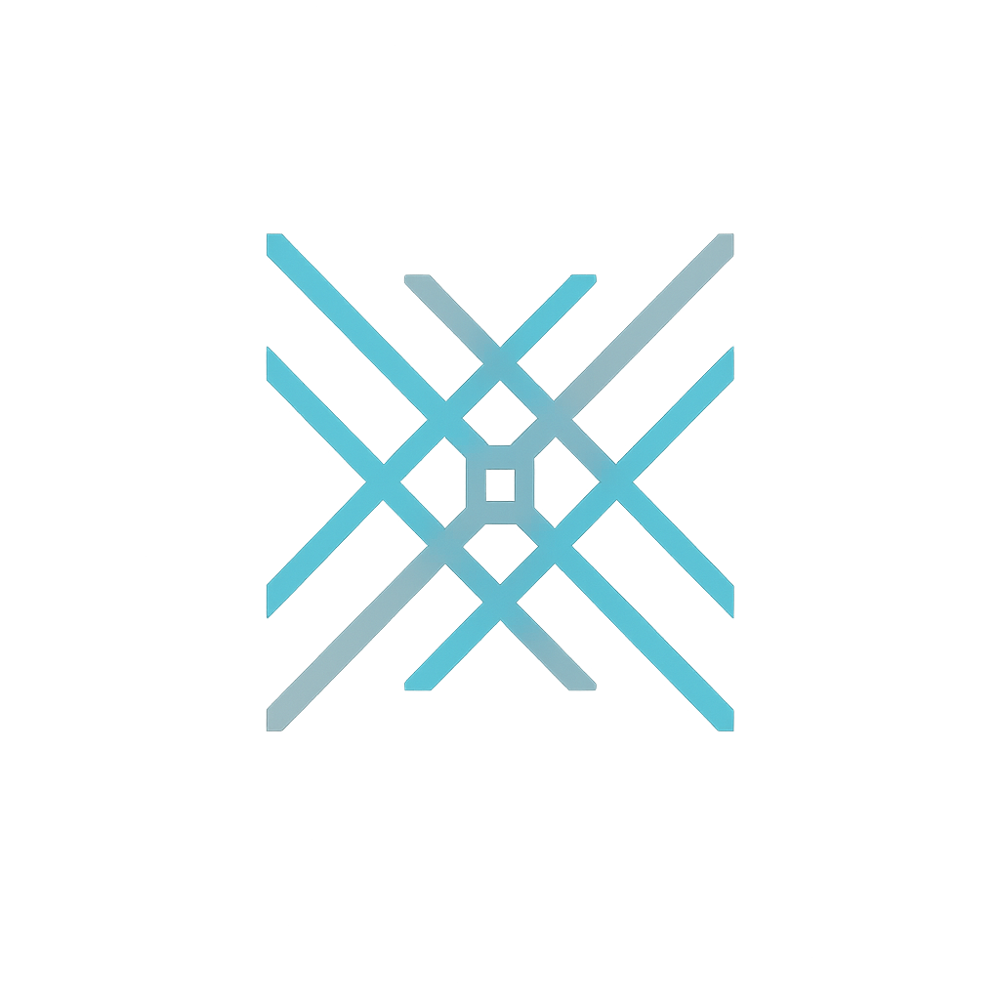
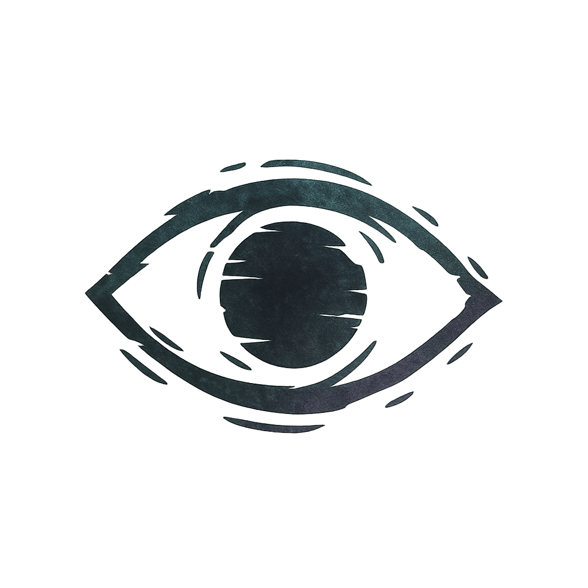

RHÔZAIA
A Força da Vida, Emoção e Criação
O coração pulsante do universo, uma força de expansão e caos criativo que anseia por crescimento.
Ver Perfil Completo »

CYTHAL
O Arquiteto Cósmico
A mente estruturante da realidade, uma força de ordem, lógica e conhecimento que busca a perfeição.
Ver Perfil Completo »THÁÏAN
O Mediador da Harmonia
A consciência que busca o equilíbrio, uma força de conexão, empatia e síntese entre os opostos.
Ver Perfil Completo »

KHAANLUR
O Engendrador da Dissonância
A sombra nascida da exclusão, uma força de paradoxo e potencial que desfaz a realidade ao tentar se conectar.
Ver Perfil Completo »